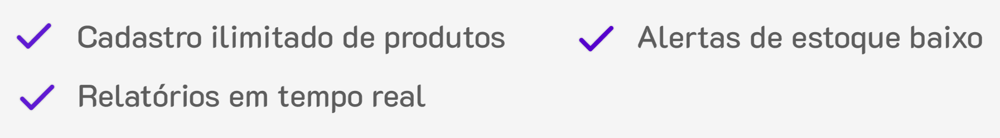
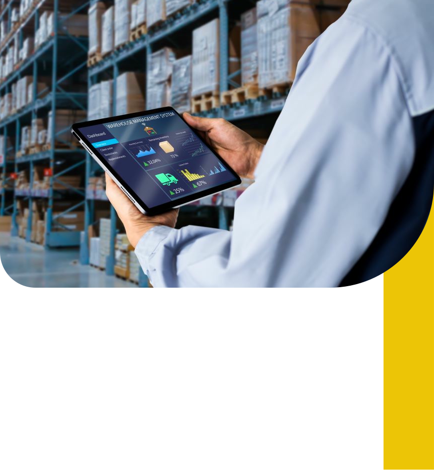
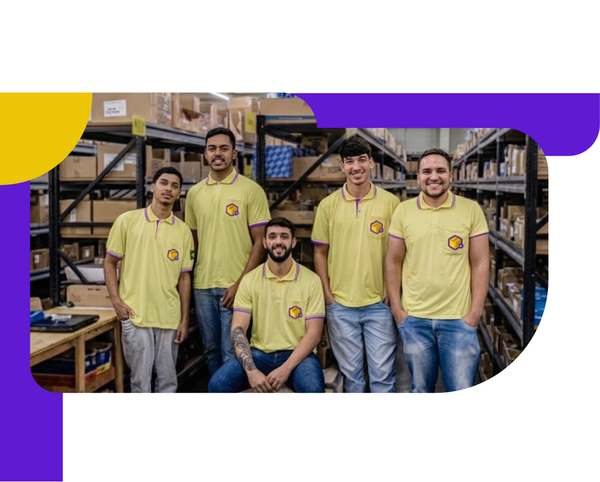

O inventra proporciona um controle e gerenciamaneto detalhado de estoques com informações em tempo real axuliando na tomada de decisão e na prevenção de perda de prosutos. Se está com dificuldade no gerenciamento temos a solução e se você já tem um sistema podemos melhora-lo

Recursos oferecidos pelo Inventra para o seu
melhor desempenho
Ao invés de usar diversos metodos para se organizar. O Inventra consegue reunir tudo e mais um pouco em uma única plataforma
30%
redução de produtos em falta
5h
economizadas por semanas
98%
de precisão no inventario
2min
para começar a usar

Nosso sistema
O nosso sistema utiliza de diversos dados como a entrada e saida dos produtos e seu fluxo no estoque para manter a precisão, logo evitado prejuisos, melhorando os lucros, incentivando melhores estratégias de vendas e gerenciamento.
Como usar de forma simples

Quem nos somos
Nós do inventra somos uma empresa de gestão de estoque
alimenticio inteligente para tosdos os tipos de estoquistas, indo desde os pequenos ao de grandes empresas,
Nossa empresa visa tambem ser uma escolha sustentavel para você, evitando o descarte de alimentos auxiliando na previdencia da validade, tendo uma ligação direta com o ODS12 que foi uma de nossas inspirações para começar nossa empresa